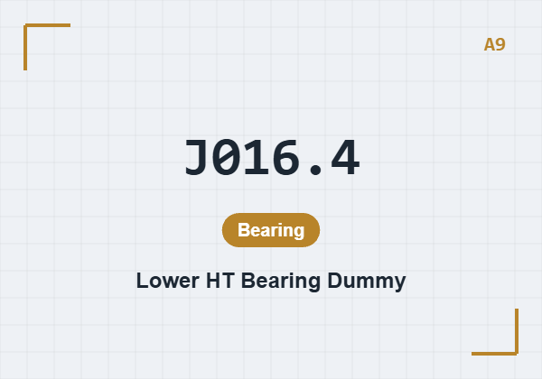
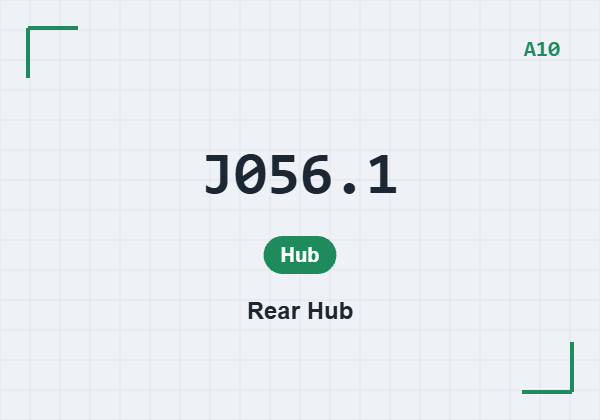
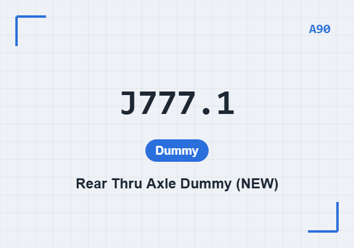

01登入
02查詢
03制具設備
04盤點
05備測
06報告
步驟 03 · A
確認所需制具
8 件 · 含鎖固扭矩
A37 · J845.1
避震器假件
×1 · B2 5/18 N·m

A1 · J068.1
前叉假件（動態）
×1 · B7 = 12 N·m
A8 · J016.4
上 HT 軸承假件
×1 · —

A9 · J016.4
下 HT 軸承假件
×1 · —

A11 · J190.1
前輪轂
×1 · —

A10 · J056.1
後輪轂
×1 · —

A90 · J777.1
後穿軸假件
×1 · 15 N·m

A6 · J311.1
前軸假件
×1 · B11 = 10 N·m
制具清單
05
01登入
02查詢
03制具設備
04盤點
05備測
06報告
步驟 05
依安裝步驟備測
01
前置組裝
依 FRM·03／01 組裝 Flip Chip 與避震器假件 A37，裝上 RD hanger D6。
02
假叉、輪轂與上機
裝假叉 A1（A8/A9，B7 = 12 N·m）與前/後輪轂 A11/A10，以 A90 ＋ 前軸假件 A6 上機（依 FRM·02）。
03
調整前軸缸並開始
調整前軸缸位置，最終檢查後開始水平循環測試。

設定示意圖 · 前軸水平施力
安裝步驟
08